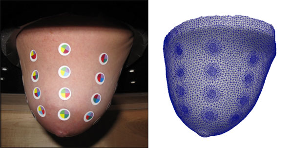

Optical Capture of the Anatomy
Electrical impedance tomography (EIT) imaging is based on the application of electrodes to the skin, and on passing very low intensity currents between these electrodes. The resulting potentials carry information relative to the distribution of electrical properties in a volume under the electrodes. Correct knowledge of the position of electrodes and of the anatomy of the volume of interest is important for successfully reconstructing EIT images. Often, the patient-specific anatomy is unknown. When this occurs, "template" anatomical models, which represent the average shape of the anatomy, are used. Small differences between the true anatomy and assumed anatomy can result in significant artifacts in the images, and generally, in reduced image quality. Our group has developed methods that allow using optical devices for accurately capturing the anatomy of the patient and position of the electrodes, producing high-quality, patient specific FEM meshes to be used for image reconstruction.

This figure illustrates results from the optical process of capturing anatomy and position of electrodes. Shown on the left is the breast of a volunteer subject to which small round colored dots were attached to simulate electrodes. The breast was captured with an optical device and using a complex chain of software developed by our group. The FEM mesh on the right was automatically produced. The mesh incorporates surface patches representing electrodes in their correct position, is high quality, and closely matches the true anatomy of the subject.